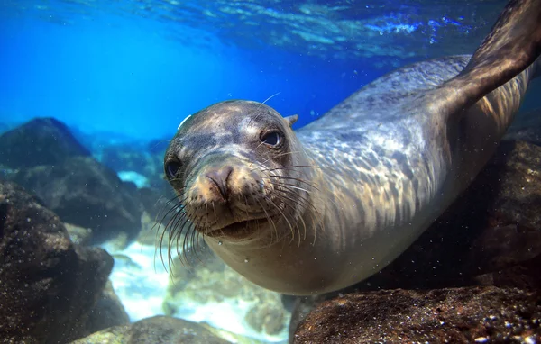
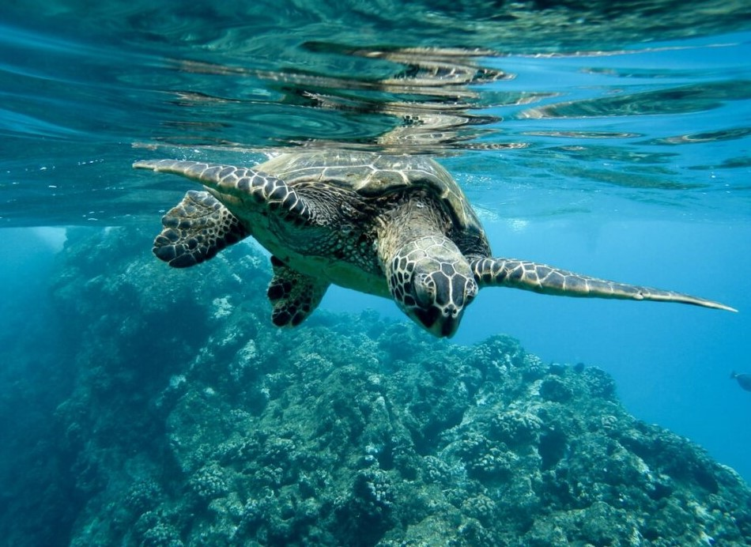
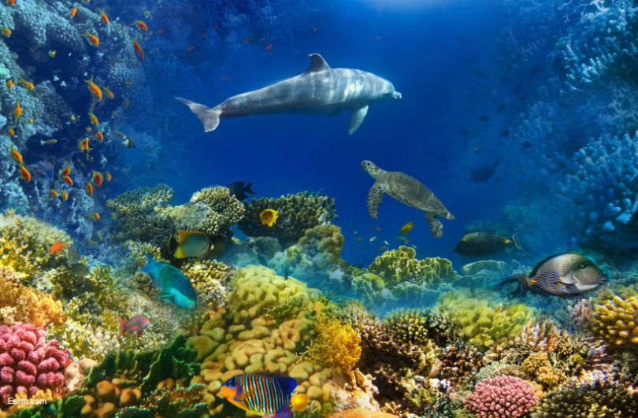

Entendendo a Poluição Marinha
Descubra como o lixo plástico afeta os ecossistemas marinhos em todo o mundo.
Leia maisExplore nosso site para aprender mais sobre como você pode ajudar a reduzir a poluição marinha.
  Descubra como o lixo plástico afeta os ecossistemas marinhos em todo o mundo.
Leia maisAssista ao vídeo sobre os impactos dos Microplásticos nos oceanos.
Assista AgoraSaiba mais sobre a poluição nos oceanos com a Oceana.
Veja o Infográfico